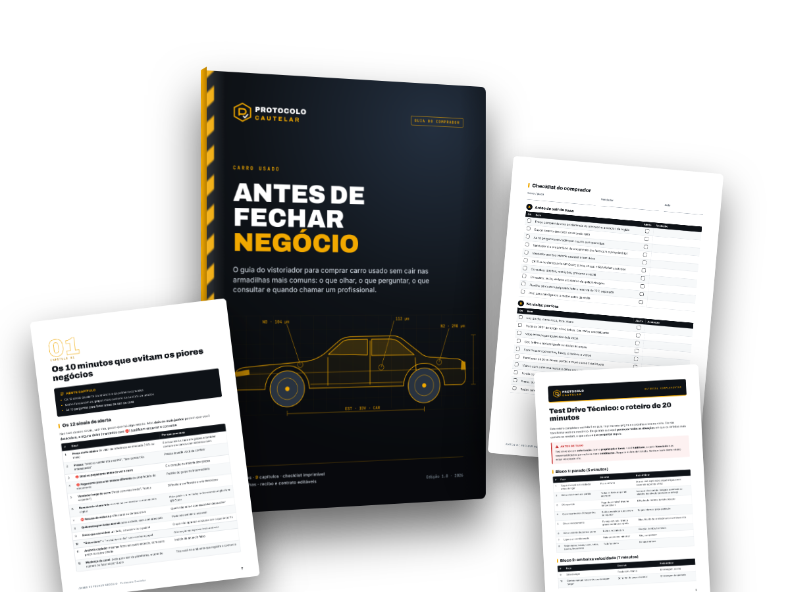
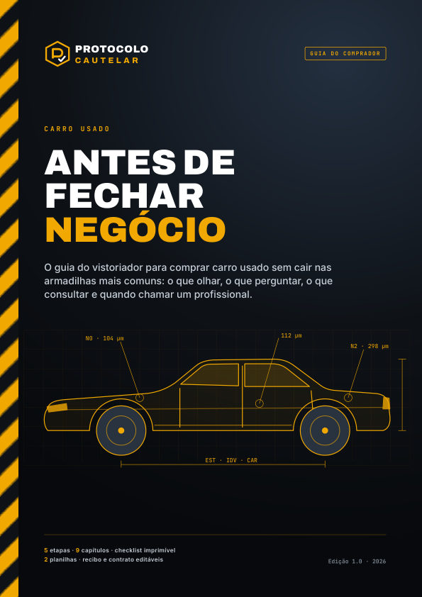
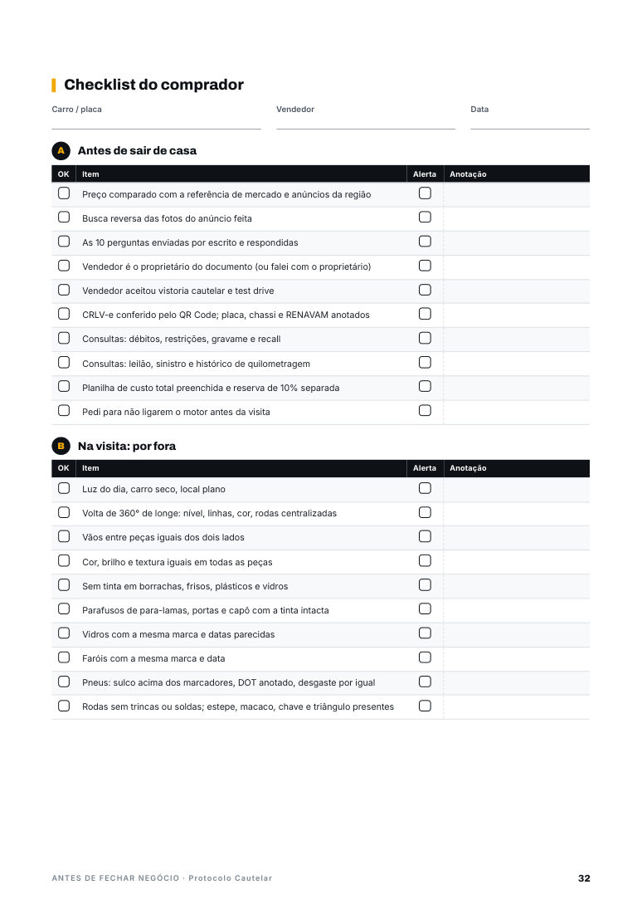
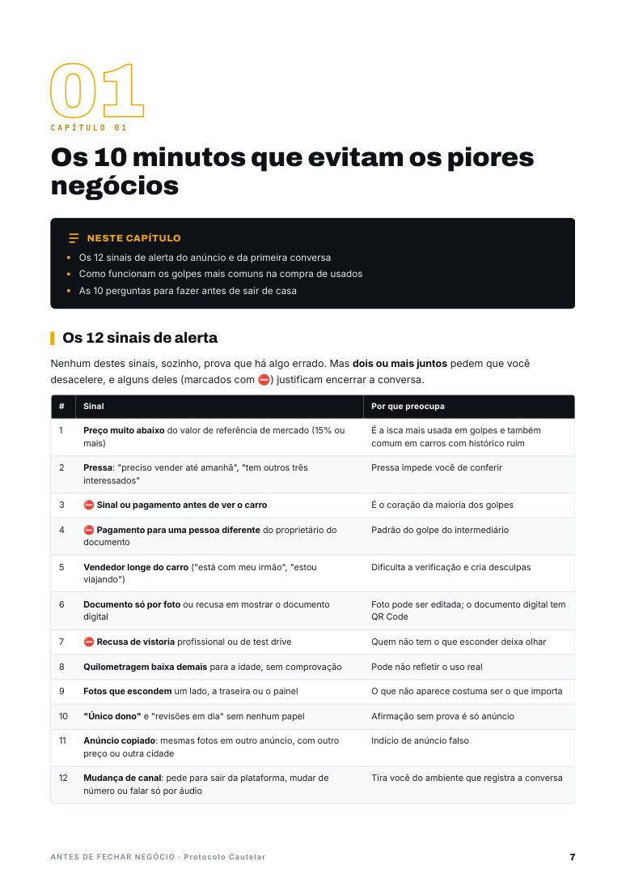

Para quem vai comprar carro usado
O guia do vistoriador para quem vai comprar carro usado: um método em 5 etapas para reduzir riscos, do anúncio à transferência. Com checklist para imprimir, planilhas e modelos de recibo e contrato.
Material digital · Acesso por e-mail após a confirmação do pagamento · Garantia de 7 dias

O problema
Nem toda compra ruim é golpe. Muitas vezes o carro existe e o vendedor é honesto, mas há um reparo que ninguém mencionou, um débito no documento ou uma restrição que impede a transferência. O guia trata dos três grupos, na ordem em que aparecem na vida real.
O carro não é o que parece, ou o negócio nem existe.
O que o anúncio não conta.
O que trava a transferência ou vira dívida.
O método
Você não precisa virar especialista em carros. Precisa de ordem, e de saber a hora de chamar quem examina carros todos os dias.
Os 12 sinais de alerta e as 10 perguntas antes de sair de casa.
Capítulo 1O custo total: dia da compra, transferência, primeiras semanas e primeiro ano.
Capítulo 2Documento digital pelo QR Code e as consultas pela placa e pelo chassi.
Capítulo 3O que um leigo consegue observar por fora, por dentro e no test drive.
Capítulos 4 a 6Laudo profissional, negociação, pagamento, contrato e transferência.
Capítulos 7 a 9O que você recebe
Cada capítulo termina com um checklist curto. No fim, as ferramentas para imprimir e preencher.


Uma amostra do capítulo 1
São 12 no guia. Nenhum, sozinho, prova que há algo errado. Dois ou mais juntos pedem que você desacelere, e os marcados com PARE justificam encerrar a conversa.
| # | Sinal e por que preocupa |
|---|---|
| 1 | Preço muito abaixo da referência de mercadoÉ a isca mais usada em golpes e também comum em carros com histórico ruim. |
| 2 | Pressa: "tem outros três interessados"Pressa impede você de conferir. |
| 3 | Sinal antes de ver o carro PAREÉ o coração da maioria dos golpes. |
| 4 | Pagamento para quem não é o dono do documento PAREPadrão do golpe do intermediário. |
| 5 | Documento só por fotoFoto pode ser editada; o documento digital tem QR Code. |
| 6 | Recusa de vistoria ou de test drive PAREQuem não tem o que esconder deixa olhar. |

Pague somente ao titular do documento (ou, na loja, à empresa vendedora), por meio rastreável, depois de ver o carro, o documento e a pessoa, e de combinar o valor total diretamente com ela.
Capítulo 8Para quem é
Com honestidade
Com método, você observa muita coisa. Mas há três áreas que o olho não alcança, e é exatamente isso que a vistoria cautelar profissional examina.
Longarinas, colunas, assoalho: onde estão os reparos que mais importam, escondidos atrás de peças e acabamentos.
Uma repintura bem feita engana o olho. Só um medidor mostra, peça a peça.
As falhas ficam registradas na memória do carro, não no painel. Só um scanner lê.
Serviço privado que você contrata para conhecer a condição do carro antes de comprar. O capítulo 7 mostra como escolher um vistoriador independente e o que fazer com cada resultado do laudo.
Exigida pelo órgão de trânsito para registrar o carro no seu nome. Não tem o objetivo de dizer se o carro é um bom negócio. Uma não substitui a outra.
O guia também não substitui a orientação de um advogado. Os modelos de recibo e contrato são referências.
A oferta
[OU PARCELAMENTO CONFORME A PLATAFORMA]
No checkout, você pode adicionar, se quiser:
Acesso por e-mail após a confirmação · Pagamento processado pela plataforma [PLATAFORMA]
Leia, imprima o checklist, abra as planilhas. Se não for útil para a sua compra, peça o reembolso em até 7 dias pela própria plataforma de pagamento e receba de volta o valor integral, sem perguntas (Código de Defesa do Consumidor, art. 49).
Dúvidas frequentes
Em boa parte, sim: os capítulos sobre sinais de alerta e golpes, custo total, documento e consultas, pagamento, contrato e transferência valem igualmente para motos. A parte de examinar o veículo foi escrita para carros. Para motos, o complemento opcional de R$ 12 traz um checklist de moto usada com 13 pontos próprios (quadro, garfo, caixa de direção, sinais de queda, corrente e outros).
Sim. O método é o mesmo, com duas diferenças que o guia explica: na loja, o pagamento vai para a empresa vendedora, e os seus direitos depois da compra seguem o Código de Defesa do Consumidor, enquanto entre particulares vale o Código Civil. O capítulo 9 resume os prazos de cada caso.
Sim. O método vale em todo o Brasil. Os procedimentos de transferência, as taxas e a forma de assinatura variam de estado para estado, e o guia marca esses pontos para você confirmar no órgão de trânsito do seu estado.
Não. O guia foi escrito para quem não é da área: ensina a observar, anotar e perguntar, e não a diagnosticar. O que exige ferramenta e experiência fica para o vistoriador, e o guia mostra quando chamá-lo.
Não, e diz isso com todas as letras, no início, no capítulo 7 e no fim. Ele também não substitui a vistoria de transferência do órgão de trânsito nem a orientação de um advogado. O que ele faz é ajudar você a filtrar os anúncios, chegar à vistoria sabendo o que pedir e decidir com o laudo em mãos.
Logo após a confirmação do pagamento, você recebe por e-mail o acesso aos arquivos para baixar: o guia em PDF, o checklist, as planilhas e os modelos.
As planilhas e os modelos de recibo, contrato e roteiro de perguntas são editáveis e abrem nos editores de planilha e de texto mais comuns, inclusive gratuitos. O guia e o checklist são PDFs prontos para ler e imprimir.
Sim. O guia em PDF abre em qualquer celular, com sumário clicável. O checklist rende mais impresso, para levar na visita. As planilhas e os modelos também abrem no celular, mas são mais confortáveis de preencher no computador.
Você tem 7 dias de garantia incondicional. É só pedir o reembolso pela plataforma de pagamento dentro do prazo.
Tem duas. O Comparativo de veículos coloca até 4 carros lado a lado, com alerta de preço e o resultado do laudo. O Custo total da compra soma o dia da compra, a transferência, o financiamento (se houver) e o custo do primeiro ano.
Filtrar, planejar, conferir, examinar e fechar. E saber a hora de chamar um profissional.
Quero o guia por R$ 27 →Garantia de 7 dias · Material digital